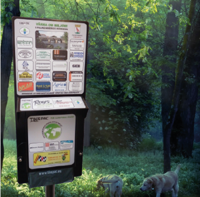

Status
Grön markör:
Här finns det påsar kvar!
Här finns det påsar kvar!
 Röd markör:
Röd markör:Påsar slut. Påfyllning på väg.

Tikspac-station
Håll utkik efter dessa stolpar längs promenadstråken för att hämta din påse.